Изучение систем контроля версий (VCS) и инструментов, таких как Git,
является важным для эффективной разработки программного обеспечения,
управления проектами и совместной работы.
Объект и предмет
исследования
Системы контроля версий, в частности Git. Предмет исследования:
Настройка и использование Git для управления версиями проектов. # Цели и
задачи
Цель: Освоить навыки работы с Git, включая настройку, создание
ключей, управление репозиториями и выполнение базовых операций.
Задачи: 1. Установить и настроить Git. 2. Создать SSH и PGP ключи. 3.
Настроить подписи Git. 4. Зарегистрироваться на GitHub. 5. Создать и
настроить локальный репозиторий.
Материалы и методы
Использование командной строки, инструментов Git и GitHub, создание
ключей SSH и PGP, настройка репозиториев и выполнение команд Git (clone,
commit, push и др.).
Создание презентации
Для
начала установим git. В моём случае он уже установлен (рис. [-@fig:001]).
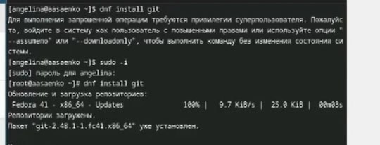
Установка git.
Теперь установим gh.
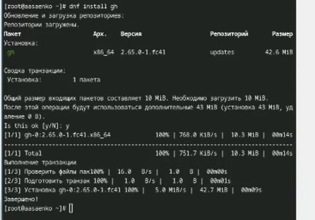
Установка gh.
Далее,
зададим имя для владельца репозитория. В данном случае это моё имя.
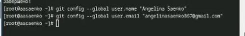
Указание имени
Теперь
зададим почту. Я задала почту, на которую у меня зарегистрирован аккаунт
на GitHub.
Указание почты.
Настроим
кодировку utf8 в выводе сообщений git.
Настройка кодировки utf8.
Зададим
имя начальной ветки, настроим параметры autocrlf и safecrlf
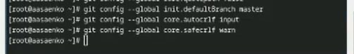
Настройка git
Создадим ключ RSA размером
4096 бит.
Создание ключа RSA
Теперь создадим ключ
по алгоритму ed25519.
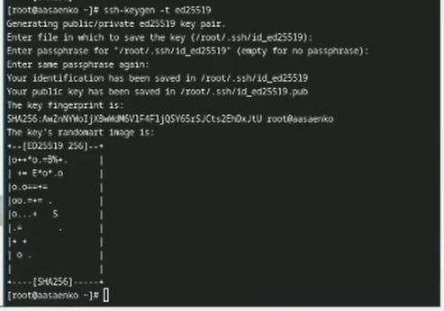
Создание ключа ed25529.
Теперь создадим ключ gpg.
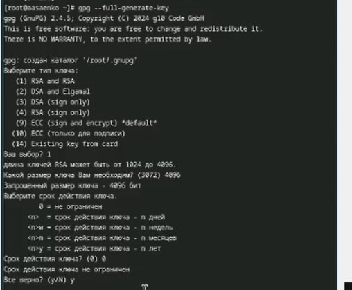
Создание pgp ключа (1)
Вводим имя и адрес
электронной почты.
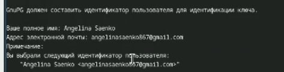
Создание pgp ключа (2)
Далее, выводим список pgp
ключей .
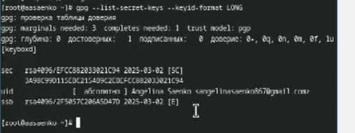
Список pgp ключей.
Копируем наш ключ в буфер
обмена
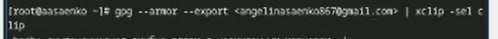
Копирование ключа.
Вставляем
этот ключ на гитхаб, и задаём ему имя. Я выбрала имя Sway.
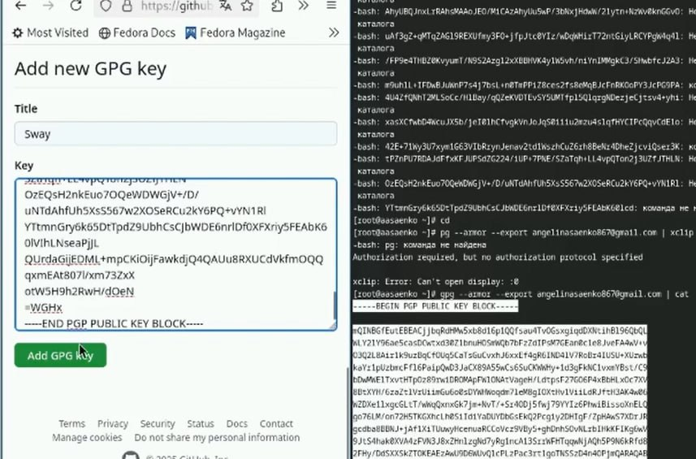
Вставка ключа в GitHub
Теперь
производим настройку автоматических подписей
Настройка автоматических подписей
коммитов git.
После,
нам нужно авторизоваться в github с помощью gh.
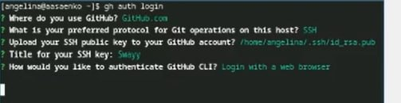
Авторизация в gh.
Теперь
создаём рабочую директорию курса и переходим в неё
Создание рабочей директории и переход в
неё.
Далее,
создаём репозиторий для лабораторных работ из шаблона.
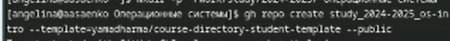
Создание репозитория курса.
И клонируем его к себе на
компьютер
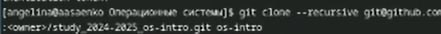
Клонирование репозитория .
Переходим
в него с помощью cd и удаляем ненужные файлы (package.json) и создаём
необходимые каталоги
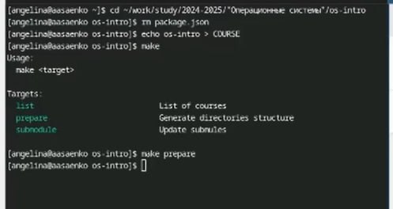
Удаление ненужных файлов и использование
make.
Теперь добавляем
нашу папку для отправки .
Использование git add.
Делаем
коммит ,в котором указываем , что мы сделали структуру курса.
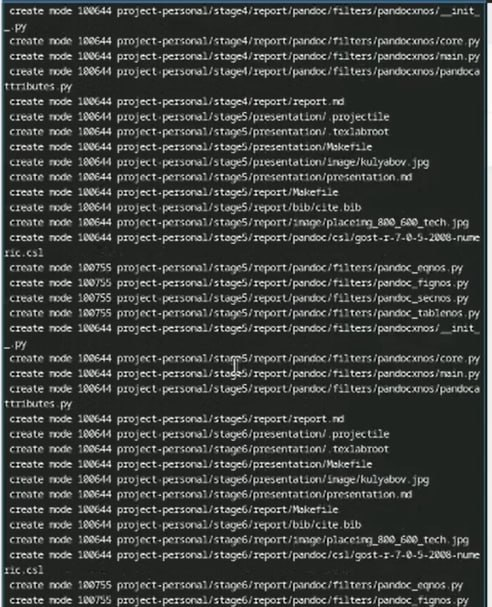
Использование git commit
И
отправляем файлы на сервер GitHub с помощью команды push
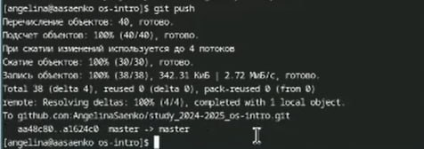
Использование git push
Выводы
Была произведена установка git , проведена его первоначальная
настройка, были созданы ключи для авторизации и подписи ,а также создан
репозиторий курса из предложенного шаблона .